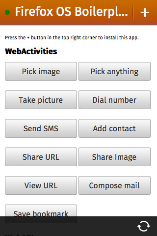

Firefox OS
a (mobile) web developers dream

Carsten Sandtner (@casarock) 2014 - muxCamp Worms 2014
Who am I?
Carsten Sandtner
Head of Development at //mediaman GmbH
Mozilla representative
Javascript enthusiast and web developer since 1998.
HTML5 based
Operating Systems
The full Safari engine is inside of iPhone. And so, you can write amazing Web 2.0 and Ajax apps that look exactly and behave exactly like apps on the iPhone. And these apps can integrate perfectly with iPhone services. They can make a call, they can send an email, they can look up a location on Google Maps. And guess what? There’s no SDK that you need!
WebOS
Invented by Palm. Aimed at smartphones and tablets.
- Launched 2009
- Apps are written in HTML5
- Palm sold to HP. HP to LG 2013
- First (mobile) OS with HTML5 UI!
- Enyo Framework still alive
ChromeOS
A Linux distribution where Google Chrome is the "UI" layer
- Launched 2009
- Desktop only!
- The browser is the OS (at least UI)
- Still alive. Chromebooks are available
Windows 8(.1)
Not the OS, but First Class Apps in HTML5.
- Build Windows 8 Apps in HTML5, CSS and Javascript
- First Class Apps.
Firefox OS
Fully open mobile operating system based on web standards
- First version released 2011
- For smartphones and tablets
- Fully web based
- App development: Just HTML5
Firefox OS
In detail
Architecture

Gonk
Low level OS of Firefox OS. Linux based on Android Open SourceProject
Gecko
Well known rendering engine by Mozilla
Gaia
UI level of Firefox OS
Only interface to the underlying operating system and hardware
Web APIs and Web activities
- Web APIs
- Access device hardware
- Provides access to data storage
- Security - sensitive APIs need approvement
- Some are already standard (W3C)
- Web Activities
- Access to sensible user data
- App requests data from an other app
- e.g. Dial a number requests Phone app
- Only available for installed or higher privileged apps
Apps and 3rd party apps
Every HTML5, Javascript, CSS based Apps for Firefox OS
Using WebAPIs and Web Activities
App Development
Just Open Web Apps
3 different App types
- hosted
- privileged
- certified
Definition in webapp.manifest
The Web App Manifest
- JSON Configuration file
- Includes: permissions, author, description, type, icons, locale etc.
Example (minimal)
{
"name": "My Awesome App",
"description": "My elevator pitch goes here",
"launch_path": "/",
"icons": {
"128": "/img/icon-128.png"
},
"developer": {
"name": "Your Name",
"url": "http://your-homepage-here.tld"
},
"default_locale": "en"
}
Example Privileged app
{
"name": "My Awesome Privileged App",
....
"type": "privileged",
"fullscreen": "true",
"permissions": {
"contacts": {
"description": "Required for autocompletion in the share screen",
"access": "readcreate"
}
},
"default_locale": "en",
...
}
Web APIs
Open API specifications to access the hardware of devices
Created with and submitted to standards bodies and other browser makers
Secured by three layer security model
Web APIs: hosted Apps
- Vibration API
- Screen Orientation
- Geolocation API
- Mouse Lock API
- Open WebApps
- Network Information API
- Battery Status API
- Alarm API
- Push Notifications API
- WebFM API / FMRadio
- WebPayment
- IndexedDB
- Ambient light sensor
- Proximity sensor
- Notification
Web APIs: privileged Apps
- Device Storage API
- Browser API
- TCP Socket API
- Contacts API
- systemXHR
Web APIs: certified Apps
- WebTelephony
- WebSMS
- Idle API
- Settings API
- Power Management API
- Mobile Connection API
- WiFi Information API
- WebBluetooth
- Permissions API
- Network Stats API
- Camera API
- Time/Clock API
- Attention screen
- Voicemail
Example: Battery API
var battery = navigator.battery,
info = {
charging: battery.charging,
chargingTime: parseInt(battery.chargingTime / 60, 10),
dischargingTime: parseInt(battery.dischargingTime / 60, 10),
level: Math.round(battery.level * 100)
};
Example: Geolocation API*
navigator.geolocation.getCurrentPosition(handleLocation);
function handleLocation(position) {
var latitude = position.coords.latitude;
var longitude = position.coords.longitude;
/*
coords.altitude
coords.accuracy
coords.altitudeAccuracy
coords.heading
coords.speed
timestamp
*/
}
Example: Vibration API
var pattern = [200, 100, 200, 200, 100],
vibrating = navigator.vibrate(pattern);
Example: Notification API
Needs permissions granted by users! (e.g. webapp.manifest)
"permissions": {
"desktop-notification": {
"description": "Allows to display notifications on the user's desktop."
}
}
// At first, let's check if we have permission for notification
// If not, let's ask for it
if (Notification && Notification.permission !== "granted") {
Notification.requestPermission(function (status) {
if (Notification.permission !== status) {
Notification.permission = status;
}
});
}
if (Notification && Notification.permission === "granted") {
var n = new Notification("Hi!");
}
Example: Connection API
Get information about current connection
var connection = window.navigator.mozConnection,
data = {
online: connection.bandwidth,
metered: connection.metered
}
Example: Ambientlight
Get current Lux of ambient light
var resElement = document.querySelector("#results");
window.ondevicelight = function (event) {
// Read out the lux value
var lux = event.value;
};
Example: Contacts API
Read/Write/Delete Contacts - Permission required!
"permissions": {
"contacts":{
"description": "Contacts permissions is required to write contact from Google to your Firefox OS phone",
"access": "readwrite" }
}
}
var contactData = {
givenName: ["John"],
familyName: ["Doe"]
};
var person = new mozContact(contactData); // Firefox OS 1.3 takes a parameter
// save the new contact
var saving = navigator.mozContacts.save(person);
saving.onsuccess = function() {
console.log('new contact saved');
};
saving.onerror = function(err) {
console.error(err);
};
Example: Device Storage API
Save/Read from sdcard, photo, music, video ...
"permissions": {
"device-storage:pictures":{ "access": "readwrite" },
"device-storage:sdcard":{ "access": "readwrite" }
}
var sdcard = navigator.getDeviceStorage("sdcard"),
file = new Blob(["This is a text file."], {type: "text/plain"}),
request = sdcard.addNamed(file, "my-file.txt");
request.onsuccess = function () {..}
request.onerror = function () {..}
var pics = navigator.getDeviceStorage('pictures');
// browse all the images available
var cursor = pics.enumerate();
cursor.onsuccess = function () {
var file = this.result;
console.log("File found: " + file.name);
// check if there is other results
if (!this.done) {
// Then we move to the next result, which call the cursor
// success with the next file as result.
this.continue();
}
}
And there are many more!
Web Activities
Web activities
- configure
- costcontrol
- dial
- open
- pick
- record
- save-bookmark
- share
- view
New ones: f.e type: “websms/sms” or “webcontacts/contact”
Example: Dial a number
var getphoto = new MozActivity({
name: "pick",
data: {
type: ["image/png",
"image/jpg",
"image/jpeg"]
}
});
getphoto.onsuccess = function() {
var img = document.createElement("img");
if (this.result.blob.type.indexOf("image") != -1) {
img.src = window.URL.createObjectURL(this.result.blob);
}
};
getphoto.onerror = function() { // error
};
Tools&Utils
Testing
- Simulator
- Browser - It's a Web App!
Development
- No SDK!
- Use your favorite IDE/Editor
- It's HTML5!
Debugging
- Developer tools in Firefox! (NOT! Firebug)
- Remote Debugger!
UI Components
 http://buildingfirefoxos.com/
http://buildingfirefoxos.com/
UI Components - Brick!
 http://mozilla.github.io/brick/
http://mozilla.github.io/brick/
Firefox OS Boilerplate
https://github.com/robnyman/Firefox-OS-Boilerplate-App
Phonegap and Cordova

http://build.phonegap.com/
http://cordova.apache.org/
How to distribute your App
Hosted App
- Host the App on your web space
- Provide installation using WebAPI
Privileged App
- Distribute via Firefox OS Marketplace

Thank you!
Carsten Sandtner
@casarock